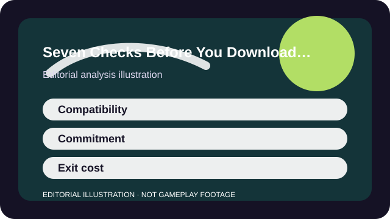

WHY THIS MATTERS
Run through compatibility, time, social, spend, and accessibility checks before a big install or a one-night friend plan.
Most bad downloads feel bad before the first real match. The signs were already there: unclear platform support, a bigger install than expected, a required launcher, a group plan that never actually fit everyone's setup, or a monetization model no one discussed until the store opened.
A short pre-download checklist catches many of those surprises. You do not need to research forever. You just need enough information to know whether this game deserves the install, the account creation, and the first evening of your time.

ANALYSIS
Check compatibility and setup reality
Start with the boring facts: platform support, account requirements, storage, controller needs, anti-cheat, and whether your group is actually playing the same version. Cross-play assumptions are one of the fastest ways to waste a night.
If the setup is already annoying before the game begins, that friction becomes part of the recommendation. A fun loop cannot always repay a needlessly messy launch path.
- Can your device really run the version your friends are using?
- Will you need a publisher account or a second launcher?
- Is the actual update size small enough for tonight's window?
ANALYSIS
Check the session and social shape
A game that is perfect for a weekend group may be terrible for a Tuesday night alone. Match length, safe stop points, and whether the game expects a squad are all part of the download decision.
This is where fit profiles help most. They translate marketing blurbs into time, social, and commitment language you can compare honestly.
- Can you stop after one match without feeling punished?
- Does the game want a full group to feel good?
- Will the first night be orientation or immediate competition?
ANALYSIS
Check the business model before the honeymoon
A store is easier to judge before the game's excitement makes every bundle seem urgent. Free-to-play, passes, expansions, and access tiers all feel different once you know what they change.
The right download question is simple: if I like this game, what will it ask from me next—money, time, calendar attention, or all three?
- Does money buy cosmetics, convenience, major content, or power-adjacent advantages?
- Will the game still make sense if you spend nothing for the first month?
- What happens if you like it but your friends stop playing?
ANALYSIS
Check accessibility and exit cost
Look for subtitles, remapping, camera options, input support, and any known issue that could turn a fun idea into an avoidable barrier. Accessibility is part of fit, not a post-install luxury.
Then ask about exit cost. If the game disappoints, can you leave cleanly? Some titles are easy to uninstall and forget. Others leave behind subscriptions, group expectations, or sunk-cost pressure that deserve a second thought before you ever click download.
TAKEAWAYS
The practical shortlist
- Compatibility, time budget, social load, and spend model are all part of the same download decision.
- Cross-play and account assumptions deserve verification before the install finishes.
- A generous first session matters more than marketing scale or one flashy trailer.
- Exit cost is a real factor: know how easily you can stop if the fit is wrong.
A smart download is not the one with the fewest questions. It is the one where you answered the right questions before the launcher made the decision for you.
SOURCES AND LIMITS
What this analysis leans on
- Platform terms, install sizes, and live-service bundles can change after publication.
- Accessibility and performance can still vary by device even when official support exists.
- This checklist reduces surprises; it does not replace reading the current official store and support pages for a specific title.
This article is an editorial analysis, not a substitute for current store terms, patch notes, or support pages. Use the links above when the live fact itself is the thing you need.